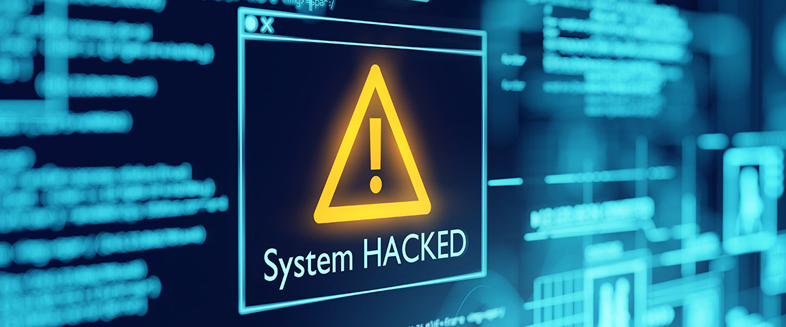

|
How can businesses and individuals guard against cyber threats? Here are our top cyber safety tips: 1. Update your software and operating system: This means you benefit from the latest security patches.
2. Use anti-virus software: Security solutions like Kaspersky Total Security will detect and removes threats. 3. Use strong passwords: Ensure your passwords are not easily guessable. 4. Do not open email attachments from unknown senders: These could be infected with malware. 5. Do not click on links in emails from unknown senders or unfamiliar websites:This is a common way that malware is spread. 6. Avoid using unsecure WiFi networks in public places: Unsecure networks leave you vulnerable to man-in-the-middle attacks. |
 |